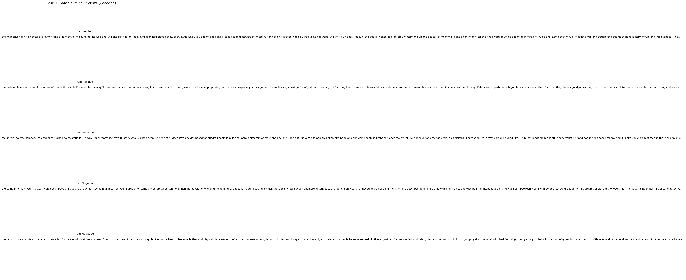
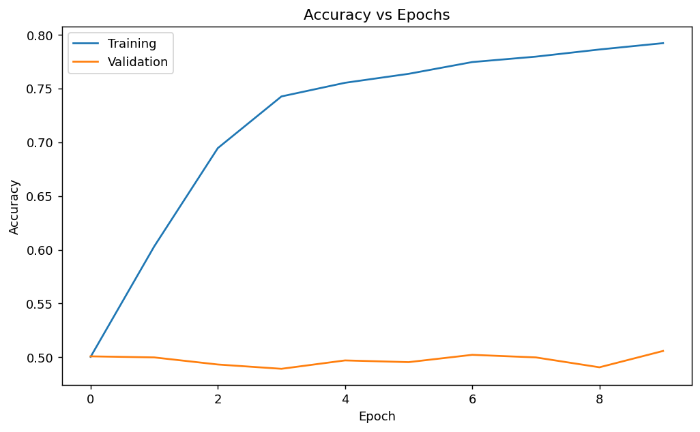
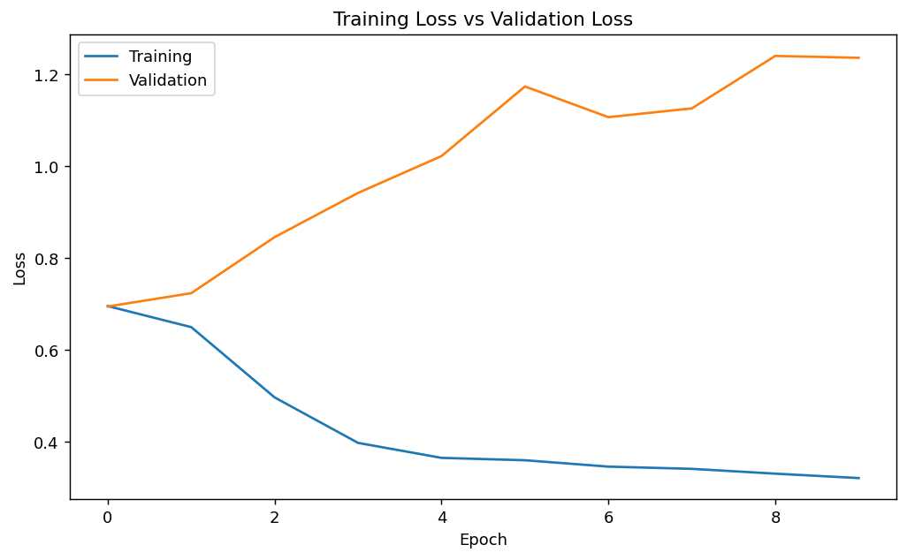
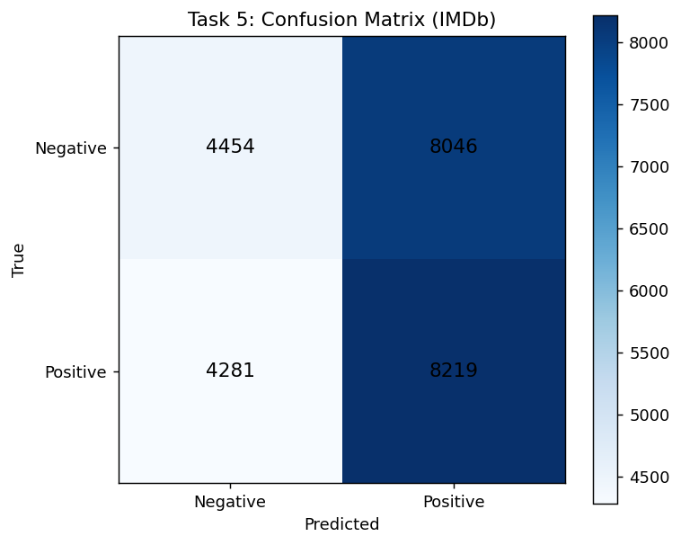
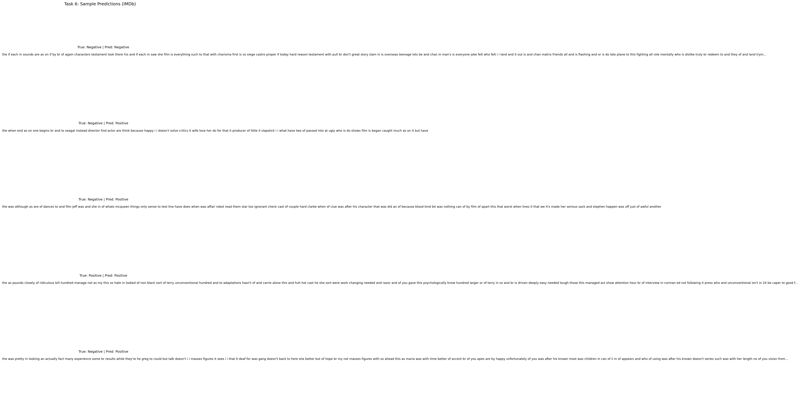

IMDb Movie Reviews — Binary Sentiment Classification (Negative vs Positive)
Perform text classification (sentiment analysis)
using a Recurrent Neural Network built with SimpleRNN,
trained on a publicly available dataset, and report the complete
workflow: dataset details, preprocessing, model development, training
curves, evaluation, and sample predictions.
| Requirement | Details (IMDb) |
|---|---|
| Dataset source |
tf.keras.datasets.imdb (IMDb movie reviews) —
publicly available dataset distributed with TensorFlow/Keras.
|
| Input format | Each review is a sequence of integers (word IDs), length varies per review. |
| Output format |
Binary label: 0 = Negative, 1 =
Positive.
|
| Train/Test split | Provided by the dataset loader as separate training and testing sets. |
imdb.load_data(num_words=MAX_FEATURES) to keep the top
frequent words only, then a few decoded samples are shown for
qualitative inspection.

MAX_FEATURES=10000 words are kept (rare words are
mapped out).
MAX_LEN=200 using
pad_sequences.
0/1) for binary_crossentropy.
(batch_size, MAX_LEN). Post-padding keeps original word
order and appends zeros at the end.
from tensorflow.keras.preprocessing.sequence import pad_sequences (x_train_raw, y_train), (x_test_raw, y_test) = tf.keras.datasets.imdb.load_data(num_words=10000) x_train = pad_sequences(x_train_raw, maxlen=200, padding="post", truncating="post") x_test = pad_sequences(x_test_raw, maxlen=200, padding="post", truncating="post")
The RNN model is built using TensorFlow/Keras with an embedding layer
followed by SimpleRNN and a sigmoid classifier.
| Component | Purpose |
|---|---|
Embedding(MAX_FEATURES, EMBEDDING_DIM) |
Maps word IDs → dense vectors; learns word representations during training. |
SimpleRNN(RNN_UNITS) |
Processes the sequence in order and maintains a recurrent hidden state. |
Dense(1, sigmoid) |
Outputs probability of positive sentiment. |
adam optimizer and binary_crossentropy, with
accuracy tracked as the classification metric.
model = tf.keras.Sequential([ tf.keras.layers.Embedding(10000, 64, input_length=200), tf.keras.layers.SimpleRNN(64), tf.keras.layers.Dense(1, activation="sigmoid") ]) model.compile(optimizer="adam", loss="binary_crossentropy", metrics=["accuracy"])
The model is trained on the IMDb training set and a validation subset is used to monitor generalization.
x_train,
y_train (IMDb training split)
x_test,
y_test (IMDb testing split)
validation_split=0.2 inside model.fit
| Final training accuracy | 0.7923 |
| Final validation accuracy | 0.5058 |
| Final training loss | 0.3210 |
| Final validation loss | 1.2359 |
history = model.fit( x_train, y_train, batch_size=64, epochs=10, validation_split=0.2 )


| Test accuracy | 0.5069 |
| Test loss | 1.2013 |
0.5 converts it into a class.
Confusion matrix counts true/false positives/negatives to summarize
classification performance.

Sentiment labels: 0=Negative, 1=Positive Negative: precision=0.5099, recall=0.3563, f1=0.4195 Positive: precision=0.5053, recall=0.6575, f1=0.5715 Confusion Matrix [[TN, FP],[FN, TP]]: [[4454, 8046], [4281, 8219]]

1) SimpleRNN reads the review word-by-word and updates a
hidden state \(h_t\) that summarizes earlier words.
2) After the last time step, the final hidden state represents the
review and is passed to a sigmoid layer to output a probability of
positive sentiment.
3) It is suitable here because it is a simple baseline for
sequential text where order matters and we want a lightweight
recurrent model.
4) In my training, the model reached
train acc = 0.7923 but only
val acc = 0.5058, showing weak generalization.
5) On the test set, it achieved
test acc = 0.5069 with
test loss = 1.2013; the confusion matrix also shows
many misclassifications.
6) Overall, the curves indicate the model learns the training data
but does not transfer well to unseen reviews (likely overfitting /
limited capacity of SimpleRNN).
In this lab, I learned how to load a public text dataset (IMDb)
where each review is stored as token IDs, and how padding/truncation
to a fixed length makes batching possible for RNN training.
I also learned how an Embedding + SimpleRNN pipeline converts
discrete word IDs into learned vectors and then processes them
sequentially to produce a final sentiment prediction.
From the accuracy/loss curves, I observed a noticeable gap between
training and validation performance, which helped me understand
generalization and overfitting in practice.
Finally, the confusion matrix and precision/recall values helped me
evaluate the model beyond accuracy and see where it is making
mistakes.